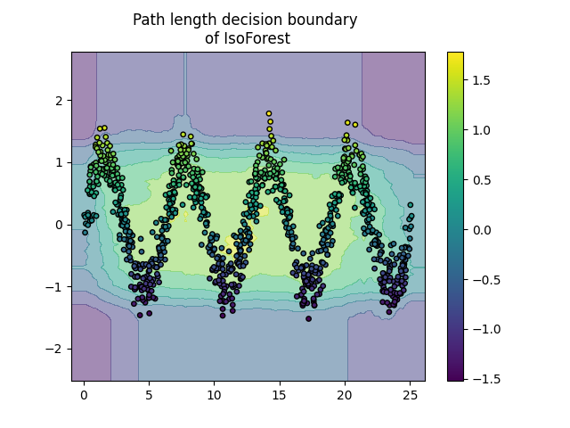
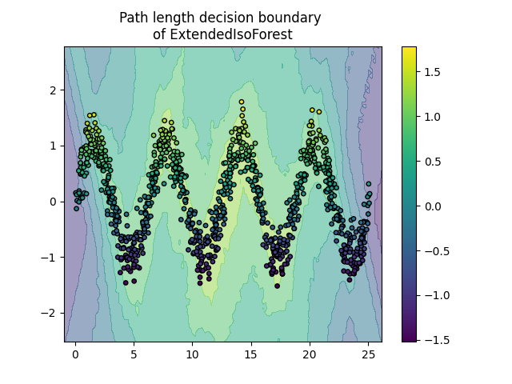
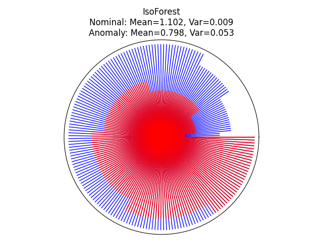
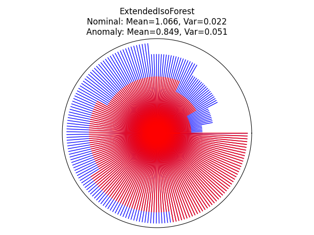

Note
Go to the end to download the full example code.
ExtendedIsolationForest example#
An example using ExtendedIsolationForest for anomaly
detection, which compares to the IsolationForest based
on the algorithm in [1].
In the present example we demo two ways to visualize the decision boundary of an Extended Isolation Forest trained on a toy dataset.
Data generation#
We generate two clusters (each one containing n_samples) by randomly
sampling the standard normal distribution as returned by
numpy.random.randn(). One of them is spherical and the other one is
slightly deformed.
For consistency with the IsolationForest notation,
the inliers (i.e. the gaussian clusters) are assigned a ground truth label 1
whereas the outliers (created with numpy.random.uniform()) are assigned
the label -1.
from copy import copy
import matplotlib.pyplot as plt
import numpy as np
from sklearn.ensemble import IsolationForest
from sklearn.inspection import DecisionBoundaryDisplay
from sklearn.model_selection import train_test_split
from sktree import ExtendedIsolationForest
n_samples, n_outliers = 120, 40
rng = np.random.RandomState(0)
covariance = np.array([[0.5, -0.1], [0.7, 0.4]])
cluster_1 = 0.4 * rng.randn(n_samples, 2) @ covariance + np.array([2, 2]) # general
cluster_2 = 0.3 * rng.randn(n_samples, 2) + np.array([-2, -2]) # spherical
outliers = rng.uniform(low=-4, high=4, size=(n_outliers, 2))
X = np.concatenate([cluster_1, cluster_2, outliers])
y = np.concatenate([np.ones((2 * n_samples), dtype=int), -np.ones((n_outliers), dtype=int)])
X_train, X_test, y_train, y_test = train_test_split(X, y, stratify=y, random_state=42)
We can visualize the resulting clusters:
scatter = plt.scatter(X[:, 0], X[:, 1], c=y, s=20, edgecolor="k")
handles, labels = scatter.legend_elements()
plt.axis("square")
plt.legend(handles=handles, labels=["outliers", "inliers"], title="true class")
plt.title("Gaussian inliers with \nuniformly distributed outliers")
plt.show()
Training of the model#
extended_clf = ExtendedIsolationForest(max_samples=100, random_state=0, feature_combinations=2)
extended_clf.fit(X_train)
clf = IsolationForest(max_samples=100, random_state=0)
clf.fit(X_train)
Plot discrete decision boundary#
We use the class DecisionBoundaryDisplay to
visualize a discrete decision boundary. The background color represents
whether a sample in that given area is predicted to be an outlier
or not. The scatter plot displays the true labels.
for name, model in zip(["IsoForest", "ExtendedIsoForest"], [clf, extended_clf]):
disp = DecisionBoundaryDisplay.from_estimator(
model,
X,
response_method="predict",
alpha=0.5,
)
disp.ax_.scatter(X[:, 0], X[:, 1], c=y, s=20, edgecolor="k")
disp.ax_.set_title(f"Binary decision boundary \nof {name}")
plt.axis("square")
plt.legend(handles=handles, labels=["outliers", "inliers"], title="true class")
plt.show()
Plot path length decision boundary#
By setting the response_method="decision_function", the background of the
DecisionBoundaryDisplay represents the measure of
normality of an observation. Such score is given by the path length averaged
over a forest of random trees, which itself is given by the depth of the leaf
(or equivalently the number of splits) required to isolate a given sample.
When a forest of random trees collectively produce short path lengths for
isolating some particular samples, they are highly likely to be anomalies and
the measure of normality is close to 0. Similarly, large paths correspond to
values close to 1 and are more likely to be inliers.
for name, model in zip(["IsoForest", "ExtendedIsoForest"], [clf, extended_clf]):
disp = DecisionBoundaryDisplay.from_estimator(
model,
X,
response_method="decision_function",
alpha=0.5,
)
disp.ax_.scatter(X[:, 0], X[:, 1], c=y, s=20, edgecolor="k")
disp.ax_.set_title(f"Path length decision boundary \nof {name}")
plt.axis("square")
plt.legend(handles=handles, labels=["outliers", "inliers"], title="true class")
plt.colorbar(disp.ax_.collections[1])
plt.show()
Generate Data Produce 2-D dataset with a sinusoidal shape and Gaussian noise added on top.
extended_clf = ExtendedIsolationForest(
max_samples=100, random_state=0, n_estimators=200, feature_combinations=2
)
extended_clf.fit(X)
clf = IsolationForest(max_samples=100, random_state=0, n_estimators=200)
clf.fit(X)
Plot discrete decision boundary
for name, model in zip(["IsoForest", "ExtendedIsoForest"], [clf, extended_clf]):
disp = DecisionBoundaryDisplay.from_estimator(
model,
X,
response_method="decision_function",
alpha=0.5,
)
disp.ax_.scatter(X[:, 0], X[:, 1], c=y, s=15, edgecolor="k")
disp.ax_.set_title(f"Path length decision boundary \nof {name}")
plt.colorbar(disp.ax_.collections[1])
plt.show()
- 
- 
Visualize the prediction of each tree within the forest#
We can visualize the prediction of each tree within the forest by using a circle plot and showing the depth at which each tree isolates a given sample. Here, we will evaluate two samples in the sinusoidal plot: one inlier and one outlier. The inlier is located at the center of the sinusoidal and the outlier is located at the bottom right corner of the plot.
inlier_sample = np.array([10.0, 0.0])
outlier_sample = np.array([-5.0, -3.0])
for name, model in zip(["IsoForest", "ExtendedIsoForest"], [clf, extended_clf]):
theta = np.linspace(0, 2 * np.pi, len(model.estimators_))
max_tree_depth = max([model.estimators_[i].get_depth() for i in range(len(model.estimators_))])
fig = plt.figure()
ax = plt.subplot(111, projection="polar")
radii_in = []
radii_out = []
# get the depth of each samples
for radii, sample, color, lw, alpha in zip(
[radii_in, radii_out], [inlier_sample, outlier_sample], ["b", "r"], [1, 1.3], [1, 0.9]
):
for i in range(len(model.estimators_)):
# get the max depth of this tree
max_depth_tree = model.estimators_[i].get_depth()
leaf_index = model.estimators_[i].apply(sample.reshape(1, -1))
# get the depth of each tree's leaf node for this sample
depth = model._decision_path_lengths[i][leaf_index].squeeze()
radii.append(depth)
radii = np.array(radii)
radii = np.sort(radii) / max_tree_depth
for j in range(len(radii)):
ax.plot([theta[j], theta[j]], [0, radii[j]], color=color, alpha=alpha, lw=lw)
if color == "b":
radii_in = copy(radii)
else:
radii_out = copy(radii)
ax.set(
title=f"{name}\nNominal: Mean={np.mean(radii_in).round(3)}, "
f"Var={np.var(radii_in).round(3)}\n"
f"Anomaly: Mean={np.mean(radii_out).round(3)}, Var={np.var(radii_out).round(3)}",
xlabel="Anomaly",
)
ax.set_xticklabels([])
ax.axes.get_xaxis().set_visible(False)
ax.axes.get_yaxis().set_visible(False)
fig.tight_layout()
plt.show()
- 
- 
References#
Total running time of the script: (0 minutes 7.785 seconds)
Estimated memory usage: 19 MB